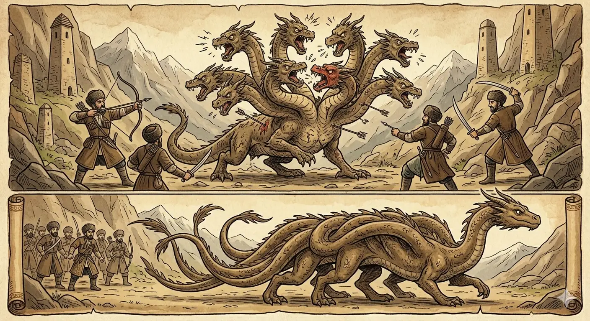

И.А. Дахкильгов. Хьехаме дувцарш - поучительные рассказы-притчи.
И.А. Дахкильгов. Хьехаме дувцарш - поучительные рассказы-притчи. Из ингушского фольклора.

Корт цаӀ хила беза
Цхьан хана бахаш хиннаб ийс корти цхьа дегӀи долаш хинна сармак. Нахаца тӀом беча хана, хӀарача керто шиший хьехараш а деш, тувлабенна биса сармак хӀалакахиннаб. Нах тӀанийсбеннаб кхыча сармака. Ийс дегӀи цхьа корти хиннаб цун. Цхьан керто яхачунга ла а догӀаш, цу ийссе дегӀо котало а яьккха, сармак кӀалхара баьнна дӀабахаб. МоллагӀа долча хӀаман хьаькъал дола ийс да хулачул толашагӀа да Ӏовдала вале а цхьа да хилар.
РУССКИЙ
Голова должна быть одна
Жил некогда сармак-дракон с девятью головами и одним телом. Когда на него напали люди, то между этими головами произошел разлад, и люди легко убили это чудовище. Затем люди встретили другого сармака, который имел десять тел, а голову имел только одну. Это чудовище сумело сохранить все свои десять тел и ушло невредимым. А все потому, что у него была одна голова и все десять тел подчинялись ей одной. Любое дело должно иметь одного хозяина, пусть даже дурного, и не должно иметь много хозяев, даже будь они все умниками.
ENGLISH
There can only be one head
Once upon a time, there lived a nine-headed, single-bodied Sarmax dragon. When humans attacked, the dragon's many heads argued amongst themselves, allowing the humans to easily slay the monster. Later, the humans encountered another sarmax dragon with ten bodies and one head. This monster managed to preserve all ten of its bodies and escaped unharmed. This was all because it had a single head, and all ten bodies obeyed it. Any undertaking must have a single leader, even if they are a bad leader, and must not have many leaders, even if they are all wise.
НОХЧИЙН
Корта цхьаъ хила беза
Цхьана хенахь бехаш хилла исс кортий цхьа деггӀий долуш хилла саьрмак. Нахаца тӀом бечу хенахь, хӀор коьрто ше-ше хьехарш а деш, тила белла бисна саьрмак хӀаллак хилла. Нах тӀенисбелла кхечу саьрмакна. Исс деггӀий цхьа кортий хилла цуьнан. Цхьана коьрто бохучуьнга ла а дугӀуш, цу иссе дегӀо толам а баьккхина, саьрмак кӀелхьара баьлла дӀабахна. Муьлха а долчу хӀуманна хьекъал долу исс да хуьлучул тоьлуш ду Ӏовдал валахь а цхьа да хилар.
ПОГОВОРКИ
Боахам боккха бар, аьнна, дош дац, цун да чӀоагӀа ца хуле. Большое хозяйство – не хозяйство, если хозяин не крепок. A large household is no household at all if its master is not firm. Бахам боккха бар, аьлла, дош дац, цуьнан да чӀогӀа ца хилахь.ВӀашагӀакхийттача шин сага юкъе цаӀ тхьамада хила воагӀа. Если соединились двое, один из них должен быть тамадой. When two people join together, one of them must become the leader. Вовшахкхеттачу шин стаган йуккъе цхьаъ тхьамда хила вогӀу.Да воацача дезала дай дукха хиннаб, пайда кӀезига хиннаб. У осиротевшей семьи много хозяев, да мало пользы. A fatherless family has many masters and little benefit. Да воцучу доьзална дай дукха хилла, пайда кӀезиг хилла.Да дика – дезал дика. Хорош хозяин, хороша и семья (двор). A good master, a good family. Да дика - доьзал дика.Доал доацача боахамах наьха рузкъа хиннад. Хозяйство без хозяина – богатство посторонних. A household without a master becomes the wealth of strangers. Дола доцучу бахамах нахан рицкъ хилла.Доал доацаш кхийна дезал – йосара даьнна жӀалеш. Семья без надзора – свора бродячих собак. A family raised without supervision is like a pack of stray dogs. Дола доцуш кхиъна доьзал – йовсар даьлла жӀаьлеш.Жена хьалха а, кхыметтел, бодж лелаш хул. Даже в овечьем стаде есть вожак-козел. Even in a flock of sheep there is a leader — the billy-goat. Жена хьалха а, мухха а, бож лелаш хуьлу.Цхьан цӀагӀа ши фусам-да хилча, ираз дӀадахад. Счастье покидает ту семью, в которой два хозяина. Happiness leaves the household that has two masters. Цхьана цӀахь ши хӀусам-да хилча, ирс дӀадолу.Цхьацца саьрг кагбеш, нув кагбаьб. По прутику переломили весь веник. By breaking twig after twig, they broke the whole broom. Цхьацца сар кагбеш, нуй кагбина.Ши кхы цхьан ворда тӀа тайнаяц, ши энгар цхьан ворда тӀа тайнай. Две снохи на одной арбе перессорились, а две жены одного мужа поладили. Two daughters-in-law couldn't share a single cart, but two wives of the same husband got along fine. Ши кхин цхьана вордан тӀехь тайна йац, ши эмгар цхьана вордан тӀехь тайна.Шиш боацаш кха а мегаргдац, Ӏу воацаш божа а мегаргбац. Без хозяина и поле – не поле, без пастуха и стадо – не стадо. A field without an owner is not a field; a flock without a shepherd is not a flock. Терго йоцуш кха а мегар дац, Ӏу воцуш бажа а мегар бац.Ӏу воацаш жа мегаргдац, да тӀа воацаш дезал мегаргбац. Овец нельзя оставить без пастуха, так и семье нужен отец (хозяин). A flock cannot be left without a shepherd, just as a family needs a father to lead it. Ӏу воцуш жа мегар дац, да тӀехь воцуш доьзал мегар бац.